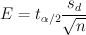
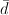
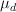

This utility computes confidence intervals for the mean of the differences between matched pairs. The confidence interval estimate of the mean of the differences between matched paris μd is:
where the margin of error E is given by ,  is the mean of the differences between sample matched pairs, and  is the mean of the differences between population matched pairs.
The sample data can be inputted in one of two ways:
The confidence level must be between 0 and 1. For example, enter 0.95 for a 95% confidence level.